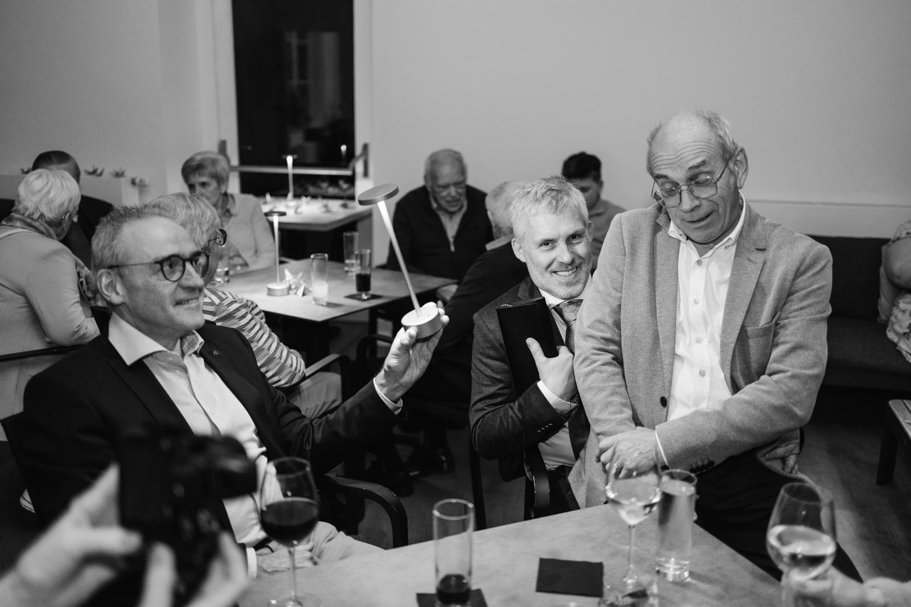

Vol. LXX · Nr. 1Speciale EditiePrijs: één hartelijke knuffel
De Pennelekker Post
~ "Het nieuws dat ertoe doet, sinds gisteren" ~
Stichelen, BelgiëZaterdag 25 juli 2026Weer: zonnig, met kans op confetti
~ Voorpaginanieuws ~
Guido bereikt onverwacht de 70
Bronnen bevestigen: zonder handleiding, reserveonderdelen of jaarlijkse keuring.

Bovenstaand: de jubilaris, eerder dit jaar, in zijn natuurlijke habitat — een tafel, een glas, en goed gezelschap.
Onze hoofdstad werd dit weekend opgeschrikt door een opmerkelijk feit: een zekere Guido — bij intimi ook bekend als "papa", "schat" of gewoon "Guido" — bereikt op zaterdag 25 juli 2026 de respectabele leeftijd van zeventig jaar. Een leeftijd waar mannen normaal nog stiekem aan twijfelen, maar waar Guido met opgeheven hoofd, een halve fietssleutel in de hand en een wijnglas in de andere, recht op af gaat.
Volgens ingewijden gaat het hier om dezelfde Guido die ooit het beruchte restaurant "De Pennelekker" runde, die later overschakelde op fietsherstellingen, en die in zijn vrije uren een verontrustend aantal kilometers aflegt — te voet, op de fiets, met de mobilhome of zelfs op een kameel.
"Hij toont geen tekenen van vermoeidheid," verklaart een naaste familielid die anoniem wil blijven. "Of toch, één keer per dag, na het middageten."
Het feest vindt plaats op de bekende locatie Stichelen 70 — een adres waarvan het cijfer zeventig de organisatoren al weken doet glimlachen. Vanaf 17 uur worden gasten verwacht voor wat omschreven wordt als "eten, drinken en gezelligheid, in die volgorde."
~ Officiële Aankondiging ~
U bent uitgenodigd
Kom mee genieten van eten, drinken en gezelligheid.
~ Wanneer ~
25 juli 2026
zaterdagnamiddag
~ Vanaf ~
17:00 uur
tot wanneer het mag
~ Waar ~
Stichelen 70
ook dus 🧐
Het Levensverhaal
"Geboren met een fietsketting in de hand"
— hoe één man de fietshersteller-stand redde, één rammelend kettinkje per keer
circa 1958 — de jonge Guido (rechts) op zijn eerste tweewieler-met-extra-wieltje.
De passie begon vroeg. Onze fotograaf groef diep in het familiearchief en ontdekte deze opname uit de late jaren vijftig, waarop een jonge Guido — herkenbaar aan zijn brede grijns — al duidelijk voorkeur toont voor alles met wielen.
Decennia later is dat niet veranderd. Tegenwoordig sleutelt hij aan fietsen alsof het zijn levenswerk is. Een rammelend kettinkje? Hij heeft het opgelost vóór je het hebt opgemerkt. Een platte band? Geen probleem, even niet kijken, en plots is alles weer rond.
Zijn favoriete winkel, zo wordt gefluisterd, is Van Eyck in Aalst. Een soort speeltuin voor volwassen mannen met een passie voor moersleutels.
De Pennelekker: een culinaire kroniek
— ooit een restaurant, voor altijd een mentaliteit
Voordat de fiets zijn levensgezel werd, had Guido een andere grote liefde: de keuken. "De Pennelekker" — een restaurant waarvan de naam alleen al doet watertanden — was zijn domein.
Wie ooit aan zijn tafel mocht aanschuiven, weet het: hier wordt gegeten zoals het hoort. Geen voorgevouwen servetten, geen droge taart, geen molecuulgastronomie waarbij je nog meer eten nodig hebt na het toetje. Gewoon: goed eten, in royale porties, met een glas erbij.
De foto rechts toont de jonge Guido in vol ornaat. De houding: vakmanschap. De blik: lichte ironie. Het bord: indrukwekkend.
jaren '70 — Guido bedient een tafel in restaurant De Pennelekker.
Op leeftijd, niet op pauze
— van Marokkaanse duinen tot Italiaanse ijssalons
Sahara, Marokko — Guido kiest voor het tragere, doch indrukwekkendere vervoersmiddel.
Wie denkt dat zeventig jaar betekent dat de koffer voorgoed onder het bed verdwijnt, kent Guido niet. Onlangs nog gespot op een kameel in het Marokkaanse zand. Daarvóór met een mobilhome in de Alpen. En tussendoor met een ijsje in de hand in een Italiaans steegje.
Onze bronnen melden dat er altijd nog wel "ergens iets te zien is". Soms een dorp, soms een markt, soms gewoon een uitzicht waar hij speciaal naartoe rijdt om het te bewonderen.
~ Beeldverslag: Een Leven Onderweg ~
~ ADVERTENTIE ~
Cadeautjes? Beslist niet nodig.
Maar mocht u tóch iets willen meebrengen — een bon zal de jubilaris zeker bekoren.
🎁 Bol.com🔧 Van Eyck (Aalst)
Van Eyck is zijn favoriete speeltuin als beginnend fietshersteller.
~ Verzoek aan de lezer ~
Gelieve te bevestigen
Een korte bevestiging op één van de gekende nummers wordt zeer gewaardeerd door de organisatie. Wij kijken er naar uit om samen deze moeilijke stap te verwerken.